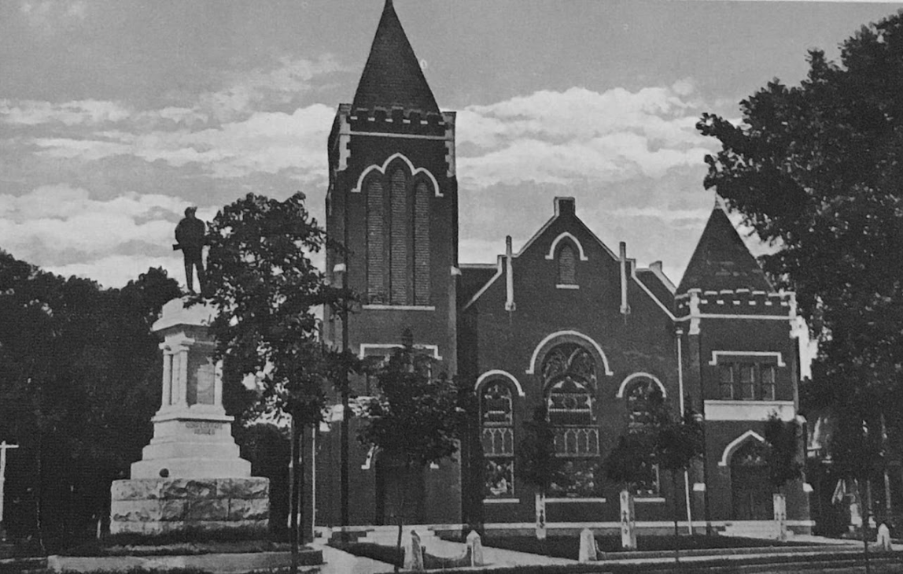
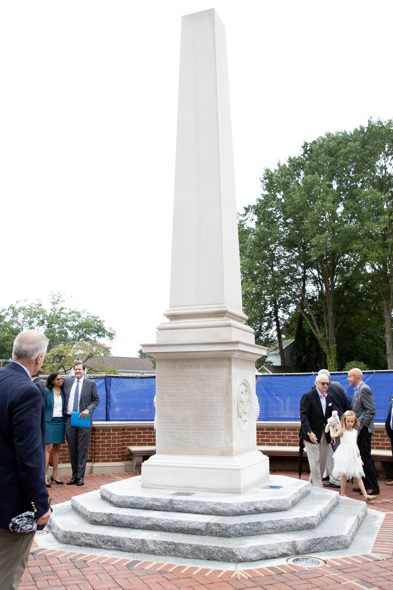
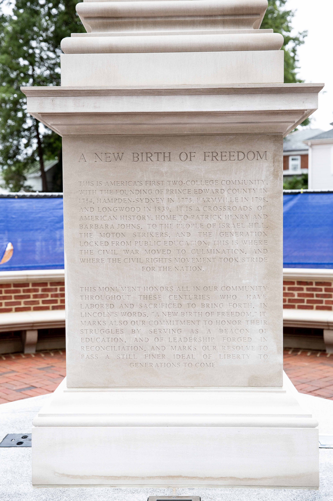

The monument northeast of the intersection of Randolph and High Streets was dedicated in 1900, during the height of the "Lost Cause" period of white nostalgia for the Confederacy. Its inscription, "Defenders of State Sovereignty and Individual Liberties," provided the name to the eighteen-county organization supporting school segregation. They alleged the Brown vs. Board decisions were part of a historical conflict between national and local authority.
The monument southwest of the intersection was dedicated in 2018 to honor persons in the community who aspired to expand freedom and civil rights throughout American history. Named in the inscription are colonial orator Patrick Henry, members of the antebellum free black community of Israel Hill, Barbara Johns and her fellow 1951 Moton school strikers, and the Black students locked out of public schools from 1959 to 1964.
The inscription on the mouments reads as follows:
This is America's first two-college community, with the founding of Prince Edward County in 1754, Hampden-Sydney in 1775, Farmville in 1798, and Longwood in 1839. It is a crossroads of American history, home to Patrick Henry and Barbara Johns, to the people of Israel Hill, the Moton strikers, and the generation locked from public education. This is where the Civil War moved to culmination, and where the Civil Rights Movement took stride for the nation.
This monument honors all in our community throughout these centuries who have labored and sacrificed to bring forth, in Lincoln's words, "a new birth of freedom." It marks also our commitment to honor their struggles by serving as a beacon of education and of leadership forged in reconciliation, and marks our resolve to pass a still finer ideal of liberty to generations to come.
